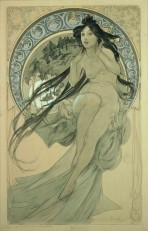
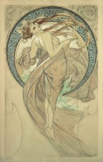
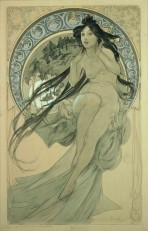
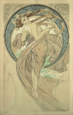

Studies for a Decorative Panel: Exploring Pose and Form
The two monochromatic images appear to be preliminary sketches or color studies for a larger decorative panel,
distinct from the The Flowers series but retaining Mucha's signature style. These studies reveal his process
of refining the female pose and integrating it with his intricate, circular decorative motifs, which often
serve as a halo or backdrop.
The figures are depicted in fluid, graceful movements, emphasizing the organic lines and drapery that define
the Art Nouveau movement. Unlike the finished lithographs, the monochromatic nature of these studies highlights
Mucha’s masterful draftsmanship and his focus on the interplay of light and shadow, form, and composition before
applying the vibrant color palettes for which he is famous. Both studies feature a prominent circular element
surrounding the figure, suggesting they may be related to one of his many thematic series, such as The Seasons
or The Times of Day.
Study for 'Autumn': The Embrace of Harvest and Melancholy
The sketch (study-4.jpg) is highly likely a preliminary study for the 'Autumn' panel from Alphonse Mucha's
celebrated 1896 decorative series, The Seasons. The woman is depicted in a pose of quiet contemplation or
melancholy, seated with her head bent slightly and resting against her hand, a stance often associated with
the reflective end of the harvest season.
She is crowned with a wreath of leaves, possibly oak or vine, symbolizing the abundance and fading glory of autumn.
The muted green and turquoise colors, along with the partially defined landscape in the background, underscore the
preparatory nature of the work, focusing on establishing the mood and form before final execution. This study
beautifully encapsulates Mucha’s talent for personifying abstract concepts through the serene, elegant female
figure, framed within the distinctive circular motif of the Art Nouveau style.
 


